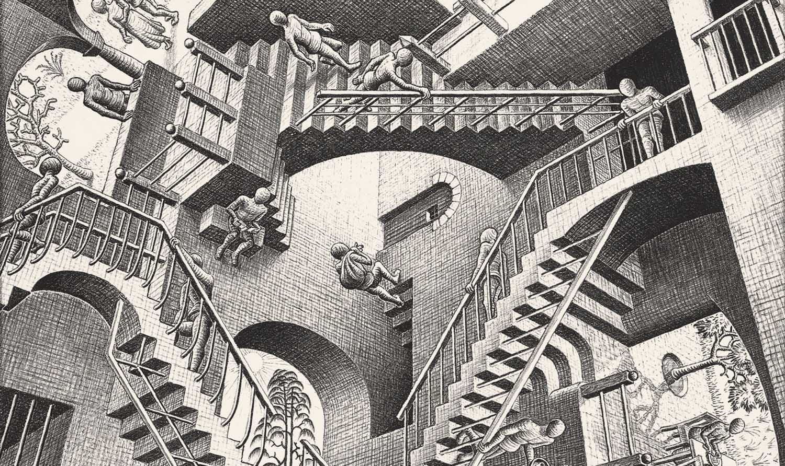

Planteamiento del problema
Avance de las tecnologías
La investigación y la constante evolución de las nuevas tecnologías proporciona prácticamente a diario nuevas soluciones a problemas y necesidades de la sociedad. Asimismo hay ciertas soluciones que acarrean nuevos problemas e incluso hay ocasiones en las que el remedio es peor que la enfermedad.
Desfase generacional entre profesores y alumnos
Adaptarse al cambio no es tarea fácil y menos todavía cuando son cambios que marcan diferencias entre generaciones. Una persona que ha estado veinte años sin conocer la existencia de un móvil ha tenido que presenciar en diez años una transformación de una simple ayuda de uso sencillo, a un dispositivo esencial, multifuncional y extremadamente complejo. No solo le costara habituarse a su uso sino que su propio uso cambia constantemente. El software y las funciones de los dispositivos actualizados se ven mejorados a una velocidad vertiginosa, difícil de seguir incluso para los nativos de la generación en la que se crearon.
Es por esto que, por norma general, los jóvenes utilizarán más las nuevas tecnologías que los profesores. Mientras que un profesor puede que tienda más a un sencillo power point y el uso de la pizarra, el alumno tenderá a los videotutoriales, las animaciones y las demostraciones interactivas. Mientras que un profesor usará más los papeles, los alumnos utilizarán más las tabletas y los ordenadores.
Los profesores y los alumnos trabajan con diferentes herramientas y esto va a generar un conflicto de métodos.
Problemas
- ¿Hasta que punto depender de la tecnología, el internet, el móvil y los múltiples dispositivos existentes para estudiar es beneficioso
- ¿Puede que perdamos más tiempo aprendiendo a usar la tecnología que a sacarle partido
- ¿Son más efectivas las nuevas o las antiguas tecnologías para el aprendizaje
- ¿Es posible llegar a un acuerdo entre alumnado y profesorado para encontrar el punto medio en el uso de la tecnologí
- Para responder varias de estas preguntas primero habrá que conocer las tecnologías en si mismas:
|

|
"Relatividad"
En obras como Relatividad (1953), Escher se dedica a manipular el espacio y la perspectiva, experimentando con la gravedad y la construcción de espacios y arquitecturas imposibles.
Menu
Antiguas tecnologías
Nuevas Tecnologías
Opinión